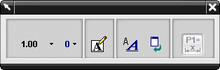
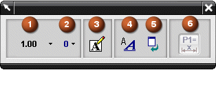

这是在您选择一个尺寸类型后出现的典型的尺寸对话框条，您选择的尺寸类型出现在对话框条顶部的标题区域。

当对话框条第一次打开时，它被锁定在对话框导轨上，您可以沿着导轨水平滑动对话框，也可以取消锁定 并将它拖动到其它任意位置。
可以使用对话框条上的各种按钮来为即将创建的新尺寸设置首选项，比如：

选择想要使用的公差类型
更改尺寸精度(小数位数)
附加文本
打开尺寸标注样式对话框
重置首选项
确定图纸页上的草图尺寸是要作为驱动尺寸还是参考尺寸